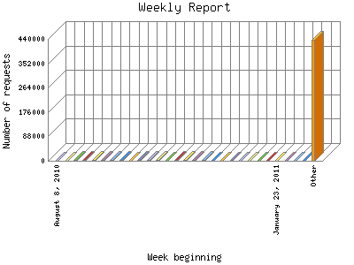

Analog 5.24
Analog 5.24 Report Magic for Analog 2.13
Report Magic for Analog 2.13The Weekly Report identifies the activity for each week within the report
time frame. Remember that one page hit can result in several server requests
as the images for each page are loaded.
Note: Depending on the
report time frame for this report the first and last week may not represent
a full seven day week, resulting in lower hits.

| Week beginning | Number of requests | Percentage of the requests | |
|---|---|---|---|
| 1. | April 3, 2016 | 18 | 0% |
| 2. | March 27, 2016 | 2,014 | 0.43% |
| 3. | March 20, 2016 | 1,397 | 0.30% |
| 4. | March 13, 2016 | 1,544 | 0.32% |
| 5. | March 6, 2016 | 86 | 0.1% |
| 6. | February 28, 2016 | 1,660 | 0.36% |
| 7. | February 21, 2016 | 1,985 | 0.42% |
| 8. | February 14, 2016 | 1,988 | 0.42% |
| 9. | February 7, 2016 | 1,966 | 0.42% |
| 10. | January 31, 2016 | 1,975 | 0.42% |
| 11. | January 24, 2016 | 1,544 | 0.32% |
| 12. | January 17, 2016 | 2,266 | 0.49% |
| 13. | January 10, 2016 | 1,660 | 0.36% |
| 14. | January 3, 2016 | 1,899 | 0.40% |
| 15. | December 27, 2015 | 1,018 | 0.21% |
| 16. | December 20, 2015 | 715 | 0.16% |
| 17. | December 13, 2015 | 1,719 | 0.37% |
| 18. | December 6, 2015 | 1,581 | 0.33% |
| 19. | November 29, 2015 | 1,866 | 0.40% |
| 20. | November 22, 2015 | 2,036 | 0.43% |
| 21. | November 15, 2015 | 3,085 | 0.66% |
| 22. | November 8, 2015 | 4,479 | 0.96% |
| 23. | November 1, 2015 | 2,637 | 0.57% |
| 24. | October 25, 2015 | 2,755 | 0.59% |
| 25. | October 18, 2015 | 3,217 | 0.69% |
| 26. | October 11, 2015 | 2,506 | 0.53% |
| 27. | October 4, 2015 | 3,503 | 0.74% |
| 28. | September 27, 2015 | 3,867 | 0.82% |
| 29. | September 20, 2015 | 4,355 | 0.92% |
| 30. | September 13, 2015 | 4,391 | 0.93% |
| 31. | September 6, 2015 | 3,869 | 0.82% |
| 32. | August 30, 2015 | 3,738 | 0.80% |
| 33. | August 23, 2015 | 4,539 | 0.97% |
| 34. | August 16, 2015 | 5,824 | 1.24% |
| 35. | August 9, 2015 | 1,767 | 0.38% |
| 36. | August 2, 2015 | 1,718 | 0.37% |
| 37. | July 26, 2015 | 1,436 | 0.30% |
| 38. | July 19, 2015 | 1,846 | 0.40% |
| 39. | July 12, 2015 | 1,599 | 0.34% |
| 40. | July 5, 2015 | 1,573 | 0.33% |
| 41. | June 28, 2015 | 2,138 | 0.46% |
| 42. | June 21, 2015 | 2,656 | 0.57% |
| 43. | June 14, 2015 | 1,799 | 0.39% |
| 44. | June 7, 2015 | 1,514 | 0.32% |
| 45. | May 31, 2015 | 1,576 | 0.33% |
| 46. | May 24, 2015 | 1,607 | 0.34% |
| 47. | May 17, 2015 | 2,359 | 0.50% |
| 48. | May 10, 2015 | 986 | 0.21% |
| 49. | May 3, 2015 | 1,950 | 0.41% |
| 50. | April 26, 2015 | 1,467 | 0.31% |
| 51. | April 19, 2015 | 1,383 | 0.30% |
| 52. | April 12, 2015 | 1,529 | 0.32% |
| 53. | April 5, 2015 | 1,793 | 0.39% |
| 54. | March 29, 2015 | 1,694 | 0.37% |
| 55. | March 22, 2015 | 1,552 | 0.33% |
| 56. | March 15, 2015 | 1,395 | 0.30% |
| 57. | March 8, 2015 | 1,411 | 0.30% |
| 58. | March 1, 2015 | 15 | 0% |
| 59. | February 22, 2015 | 1,508 | 0.32% |
| 60. | February 15, 2015 | 1,422 | 0.30% |
| 61. | February 8, 2015 | 1,184 | 0.26% |
| 62. | February 1, 2015 | 1,349 | 0.29% |
| 63. | January 25, 2015 | 1,548 | 0.33% |
| 64. | January 18, 2015 | 1,618 | 0.34% |
| 65. | January 11, 2015 | 1,812 | 0.39% |
| 66. | January 4, 2015 | 1,699 | 0.37% |
| 67. | December 28, 2014 | 1,485 | 0.31% |
| 68. | December 21, 2014 | 1,479 | 0.31% |
| 69. | December 14, 2014 | 1,453 | 0.31% |
| 70. | December 7, 2014 | 1,465 | 0.31% |
| 71. | November 30, 2014 | 1,488 | 0.31% |
| 72. | November 23, 2014 | 1,606 | 0.34% |
| 73. | November 16, 2014 | 2,021 | 0.43% |
| 74. | November 9, 2014 | 2,704 | 0.58% |
| 75. | November 2, 2014 | 2,248 | 0.49% |
| 76. | October 26, 2014 | 1,507 | 0.32% |
| 77. | October 19, 2014 | 1,836 | 0.40% |
| 78. | October 12, 2014 | 1,819 | 0.39% |
| 79. | October 5, 2014 | 1,673 | 0.36% |
| 80. | September 28, 2014 | 2,383 | 0.50% |
| 81. | September 21, 2014 | 1,857 | 0.40% |
| 82. | September 14, 2014 | 1,735 | 0.38% |
| 83. | September 7, 2014 | 1,924 | 0.41% |
| 84. | August 31, 2014 | 1,278 | 0.28% |
| 85. | August 24, 2014 | 1,531 | 0.32% |
| 86. | August 17, 2014 | 1,690 | 0.37% |
| 87. | August 10, 2014 | 1,693 | 0.37% |
| 88. | August 3, 2014 | 1,807 | 0.39% |
| 89. | July 27, 2014 | 1,649 | 0.36% |
| 90. | July 20, 2014 | 1,393 | 0.30% |
| 91. | July 13, 2014 | 1,706 | 0.37% |
| 92. | July 6, 2014 | 1,428 | 0.30% |
| 93. | June 29, 2014 | 1,936 | 0.41% |
| 94. | June 22, 2014 | 1,904 | 0.40% |
| 95. | June 15, 2014 | 1,678 | 0.36% |
| 96. | June 8, 2014 | 1,426 | 0.30% |
| 97. | June 1, 2014 | 1,745 | 0.38% |
| 98. | May 25, 2014 | 1,390 | 0.30% |
| 99. | May 18, 2014 | 1,617 | 0.34% |
| 100. | May 11, 2014 | 2,189 | 0.47% |
| 101. | May 4, 2014 | 1,555 | 0.33% |
| 102. | April 27, 2014 | 1,120 | 0.23% |
| 103. | April 20, 2014 | 1,327 | 0.29% |
| 104. | April 13, 2014 | 1,300 | 0.28% |
| 105. | April 6, 2014 | 1,420 | 0.30% |
| 106. | March 30, 2014 | 1,519 | 0.32% |
| 107. | March 23, 2014 | 1,229 | 0.27% |
| 108. | March 16, 2014 | 1,593 | 0.34% |
| 109. | March 9, 2014 | 1,781 | 0.39% |
| 110. | March 2, 2014 | 56 | 0.1% |
| 111. | February 23, 2014 | 1,570 | 0.33% |
| 112. | February 16, 2014 | 1,586 | 0.33% |
| 113. | February 9, 2014 | 1,575 | 0.33% |
| 114. | February 2, 2014 | 1,357 | 0.30% |
| 115. | January 26, 2014 | 1,449 | 0.30% |
| 116. | January 19, 2014 | 1,699 | 0.37% |
| 117. | January 12, 2014 | 1,855 | 0.40% |
| 118. | January 5, 2014 | 1,795 | 0.39% |
| 119. | December 29, 2013 | 1,731 | 0.37% |
| 120. | December 22, 2013 | 1,437 | 0.30% |
| 121. | December 15, 2013 | 1,831 | 0.40% |
| 122. | December 8, 2013 | 1,806 | 0.39% |
| 123. | December 1, 2013 | 2,008 | 0.42% |
| 124. | November 24, 2013 | 1,992 | 0.42% |
| 125. | November 17, 2013 | 1,585 | 0.33% |
| 126. | November 10, 2013 | 1,454 | 0.31% |
| 127. | November 3, 2013 | 1,792 | 0.39% |
| 128. | October 27, 2013 | 2,190 | 0.47% |
| 129. | October 20, 2013 | 1,733 | 0.38% |
| 130. | October 13, 2013 | 1,612 | 0.34% |
| 131. | October 6, 2013 | 1,577 | 0.33% |
| 132. | September 29, 2013 | 34 | 0% |
| 133. | September 22, 2013 | 1,567 | 0.33% |
| 134. | September 15, 2013 | 2,061 | 0.44% |
| 135. | September 8, 2013 | 1,976 | 0.42% |
| 136. | September 1, 2013 | 1,501 | 0.32% |
| 137. | August 25, 2013 | 1,476 | 0.31% |
| 138. | August 18, 2013 | 1,748 | 0.38% |
| 139. | August 11, 2013 | 1,381 | 0.30% |
| 140. | August 4, 2013 | 1,759 | 0.38% |
| 141. | July 28, 2013 | 1,973 | 0.42% |
| 142. | July 21, 2013 | 2,097 | 0.44% |
| 143. | July 14, 2013 | 1,809 | 0.39% |
| 144. | July 7, 2013 | 1,546 | 0.33% |
| 145. | June 30, 2013 | 1,653 | 0.36% |
| 146. | June 23, 2013 | 2,089 | 0.44% |
| 147. | June 16, 2013 | 1,574 | 0.33% |
| 148. | June 9, 2013 | 2,196 | 0.47% |
| 149. | June 2, 2013 | 1,543 | 0.32% |
| 150. | May 26, 2013 | 1,630 | 0.34% |
| 151. | May 19, 2013 | 1,170 | 0.26% |
| 152. | May 12, 2013 | 1,586 | 0.33% |
| 153. | May 5, 2013 | 1,623 | 0.34% |
| 154. | April 28, 2013 | 1,394 | 0.30% |
| 155. | April 21, 2013 | 1,723 | 0.37% |
| 156. | April 14, 2013 | 1,800 | 0.39% |
| 157. | April 7, 2013 | 2,138 | 0.46% |
| 158. | March 31, 2013 | 1,886 | 0.40% |
| 159. | March 24, 2013 | 1,546 | 0.33% |
| 160. | March 17, 2013 | 1,923 | 0.41% |
| 161. | March 10, 2013 | 2,049 | 0.43% |
| 162. | March 3, 2013 | 23 | 0% |
| 163. | February 24, 2013 | 1,589 | 0.33% |
| 164. | February 17, 2013 | 2,448 | 0.52% |
| 165. | February 10, 2013 | 1,928 | 0.41% |
| 166. | February 3, 2013 | 1,722 | 0.37% |
| 167. | January 27, 2013 | 1,351 | 0.29% |
| 168. | January 20, 2013 | 1,584 | 0.33% |
| 169. | January 13, 2013 | 1,833 | 0.40% |
| 170. | January 6, 2013 | 1,881 | 0.40% |
| 171. | December 30, 2012 | 2,107 | 0.46% |
| 172. | December 23, 2012 | 2,064 | 0.44% |
| 173. | December 16, 2012 | 1,496 | 0.31% |
| 174. | December 9, 2012 | 2,298 | 0.50% |
| 175. | December 2, 2012 | 2,144 | 0.46% |
| 176. | November 25, 2012 | 3,797 | 0.81% |
| 177. | November 18, 2012 | 2,689 | 0.58% |
| 178. | November 11, 2012 | 3,199 | 0.69% |
| 179. | November 4, 2012 | 2,654 | 0.57% |
| 180. | October 28, 2012 | 3,155 | 0.68% |
| 181. | October 21, 2012 | 1,543 | 0.32% |
| 182. | October 14, 2012 | 2,175 | 0.47% |
| 183. | October 7, 2012 | 2,191 | 0.47% |
| 184. | September 30, 2012 | 2,111 | 0.46% |
| 185. | September 23, 2012 | 2,056 | 0.43% |
| 186. | September 16, 2012 | 1,549 | 0.33% |
| 187. | September 9, 2012 | 1,880 | 0.40% |
| 188. | September 2, 2012 | 2,091 | 0.44% |
| 189. | August 26, 2012 | 1,554 | 0.33% |
| 190. | August 19, 2012 | 1,182 | 0.26% |
| 191. | August 12, 2012 | 1,668 | 0.36% |
| 192. | August 5, 2012 | 1,868 | 0.40% |
| 193. | July 29, 2012 | 1,123 | 0.24% |
| 194. | July 22, 2012 | 2,138 | 0.46% |
| 195. | July 15, 2012 | 1,346 | 0.29% |
| 196. | July 8, 2012 | 1,022 | 0.21% |
| 197. | July 1, 2012 | 1,508 | 0.32% |
| 198. | June 24, 2012 | 1,358 | 0.30% |
| 199. | June 17, 2012 | 1,254 | 0.27% |
| 200. | June 10, 2012 | 1,074 | 0.22% |
| 201. | June 3, 2012 | 1,580 | 0.33% |
| 202. | May 27, 2012 | 1,519 | 0.32% |
| 203. | May 20, 2012 | 1,299 | 0.28% |
| 204. | May 13, 2012 | 1,326 | 0.29% |
| 205. | May 6, 2012 | 1,609 | 0.34% |
| 206. | April 29, 2012 | 1,659 | 0.36% |
| 207. | April 22, 2012 | 1,763 | 0.38% |
| 208. | April 15, 2012 | 1,553 | 0.33% |
| 209. | April 8, 2012 | 2,185 | 0.47% |
| 210. | April 1, 2012 | 1,462 | 0.31% |
| 211. | March 25, 2012 | 1,809 | 0.39% |
| 212. | March 18, 2012 | 1,468 | 0.31% |
| 213. | March 11, 2012 | 1,318 | 0.29% |
| 214. | March 4, 2012 | 32 | 0% |
| 215. | February 26, 2012 | 1,324 | 0.29% |
| 216. | February 19, 2012 | 1,430 | 0.30% |
| 217. | February 12, 2012 | 665 | 0.14% |
| 218. | February 5, 2012 | 1,240 | 0.27% |
| 219. | January 29, 2012 | 105 | 0.2% |
| 220. | January 22, 2012 | 1,082 | 0.23% |
| 221. | January 15, 2012 | 55 | 0.1% |
| 222. | January 8, 2012 | 1,446 | 0.30% |
| 223. | January 1, 2012 | 1,044 | 0.22% |
| 224. | December 25, 2011 | 1,226 | 0.27% |
| 225. | December 18, 2011 | 1,727 | 0.37% |
| 226. | December 11, 2011 | 1,570 | 0.33% |
| 227. | December 4, 2011 | 1,534 | 0.32% |
| 228. | November 27, 2011 | 1,530 | 0.32% |
| 229. | November 20, 2011 | 1,249 | 0.27% |
| 230. | November 13, 2011 | 1,400 | 0.30% |
| 231. | November 6, 2011 | 1,435 | 0.30% |
| 232. | October 30, 2011 | 1,457 | 0.31% |
| 233. | October 23, 2011 | 1,266 | 0.28% |
| 234. | October 16, 2011 | 1,748 | 0.38% |
| 235. | October 9, 2011 | 1,374 | 0.30% |
| 236. | October 2, 2011 | 1,354 | 0.29% |
| 237. | September 25, 2011 | 1,905 | 0.40% |
| 238. | September 18, 2011 | 1,938 | 0.41% |
| 239. | September 11, 2011 | 3,114 | 0.67% |
| 240. | September 4, 2011 | 1,340 | 0.29% |
| 241. | August 28, 2011 | 1,341 | 0.29% |
| 242. | August 21, 2011 | 1,627 | 0.34% |
| 243. | August 14, 2011 | 1,297 | 0.28% |
| 244. | August 7, 2011 | 1,615 | 0.34% |
| 245. | July 31, 2011 | 1,346 | 0.29% |
| 246. | July 24, 2011 | 1,203 | 0.26% |
| 247. | July 17, 2011 | 1,176 | 0.26% |
| 248. | July 10, 2011 | 1,375 | 0.30% |
| 249. | July 3, 2011 | 1,337 | 0.29% |
| 250. | June 26, 2011 | 1,516 | 0.32% |
| 251. | June 19, 2011 | 1,362 | 0.30% |
| 252. | June 12, 2011 | 0 | 0% |
| 253. | June 5, 2011 | 0 | 0% |
| 254. | May 29, 2011 | 0 | 0% |
| 255. | May 22, 2011 | 0 | 0% |
| 256. | May 15, 2011 | 0 | 0% |
| 257. | May 8, 2011 | 0 | 0% |
| 258. | May 1, 2011 | 0 | 0% |
| 259. | April 24, 2011 | 0 | 0% |
| 260. | April 17, 2011 | 0 | 0% |
| 261. | April 10, 2011 | 0 | 0% |
| 262. | April 3, 2011 | 0 | 0% |
| 263. | March 27, 2011 | 0 | 0% |
| 264. | March 20, 2011 | 0 | 0% |
| 265. | March 13, 2011 | 0 | 0% |
| 266. | March 6, 2011 | 0 | 0% |
| 267. | February 27, 2011 | 0 | 0% |
| 268. | February 20, 2011 | 0 | 0% |
| 269. | February 13, 2011 | 0 | 0% |
| 270. | February 6, 2011 | 0 | 0% |
| 271. | January 30, 2011 | 0 | 0% |
| 272. | January 23, 2011 | 0 | 0% |
| 273. | January 16, 2011 | 0 | 0% |
| 274. | January 9, 2011 | 0 | 0% |
| 275. | January 2, 2011 | 0 | 0% |
| 276. | December 26, 2010 | 0 | 0% |
| 277. | December 19, 2010 | 0 | 0% |
| 278. | December 12, 2010 | 0 | 0% |
| 279. | December 5, 2010 | 81 | 0.1% |
| 280. | November 28, 2010 | 1,832 | 0.40% |
| 281. | November 21, 2010 | 1,737 | 0.38% |
| 282. | November 14, 2010 | 1,913 | 0.40% |
| 283. | November 7, 2010 | 1,732 | 0.38% |
| 284. | October 31, 2010 | 1,543 | 0.32% |
| 285. | October 24, 2010 | 1,667 | 0.36% |
| 286. | October 17, 2010 | 1,906 | 0.40% |
| 287. | October 10, 2010 | 1,980 | 0.42% |
| 288. | October 3, 2010 | 1,522 | 0.32% |
| 289. | September 26, 2010 | 2,103 | 0.44% |
| 290. | September 19, 2010 | 2,240 | 0.48% |
| 291. | September 12, 2010 | 3,345 | 0.71% |
| 292. | September 5, 2010 | 2,557 | 0.54% |
| 293. | August 29, 2010 | 1,853 | 0.40% |
| 294. | August 22, 2010 | 1,744 | 0.38% |
| 295. | August 15, 2010 | 1,419 | 0.30% |
| 296. | August 8, 2010 | 1,150 | 0.24% |
Most active week beginning August 16, 2015 : 5,824 requests handled.
Weekly average: 1742 requests handled.
This report was generated on April 3, 2016 02:21.
Report time frame August 10, 2010 08:36 to April 3, 2016 04:37.
| Web statistics report produced by: | |
| Analog 5.24 | Report Magic for Analog 2.13 |